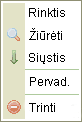

Kontekstinis meniu tai yra eil臈 mygtuk懦 (vadinam懦 "meniu") kurie gali paleisti tam tikras u啪duotis ar operacijas. Galimi pasirinkimas kei膷iasi dinami拧kai, prikalusomai nuoto, koks objektas buvo nuspaustas.
沤emiau yra meniu, kuriuos atrasite dirbant su standartine CKFinder instaliacija.
Jis atsiranda, kai segtuve paspaud啪iate Segtuv懦 skydelyje de拧iniu pel臈s klavi拧u:
Jis atsiranda, kai nuspaud啪iate fail膮 Fail懦 skydelyje de拧iniu pel臈s klavi拧u:

Jis atsiranda, kai nuspaud啪iate Fail懦 skydelyje, bet failo i拧or臈je (fone) pel臈s de拧iniu klavi拧u: